The approximate-GCD, which is called near-GCD in [8], of two polynomials
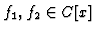
, where C[x] is a complex number coefficient polynomial, is stated as the following concept.
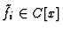
, i=1,2, possess a near-GCD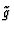
if there exist polynomials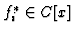
, i=1,2, which satisfy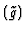
is the highest possible degree for (5). Equivalently, a near-GCD of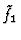
and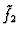
satisfies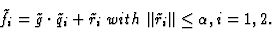 |
(6) |
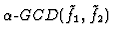
.
Here, the norm of the polynomial means L1 norm. A near-GCD
is
computed via
Euclidean Algorithm and a relaxed
termination criterion which should be imposed at a given accuracy level  .
The
algorithm to compute
.
The
algorithm to compute  -GCD of f1 and f2 is summarized as follows:
-GCD of f1 and f2 is summarized as follows:
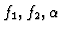
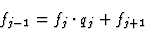
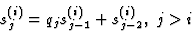
i\end{displaymath}">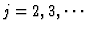
and i=1,2 with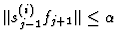
, then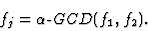
The polynomials fj generated by the algorithm,
f1 and f2 are represented as
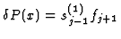
and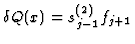
.